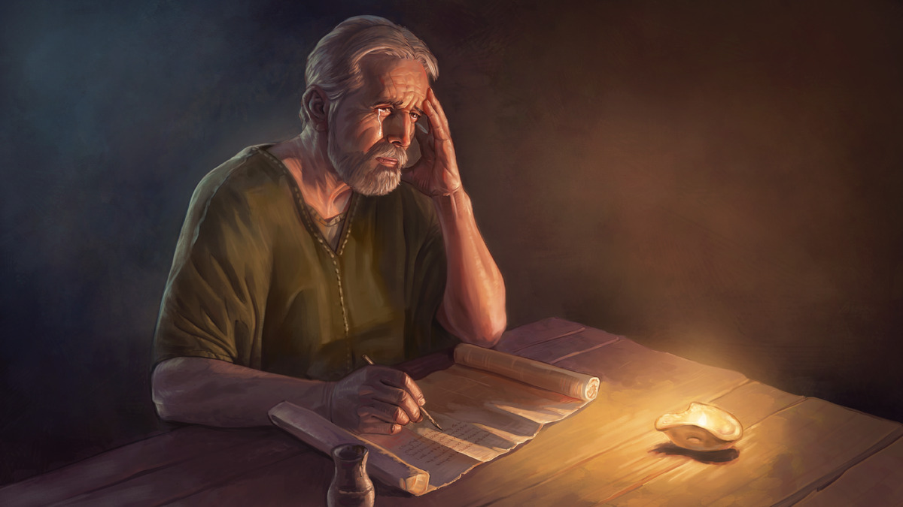
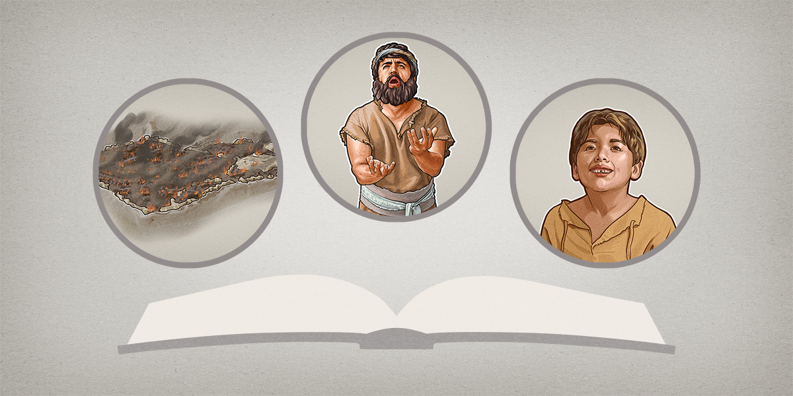

O esboço da apostila, um roteiro cronometrado com falas prontas (já contando os 2 min 46 s do vídeo), o resumo do vídeo com os minutos, os insights e as fontes separadas com o trecho que interessa marcado. Cada bloco tem o botão “de onde veio”.

Jeremias chorou pelo povo, mas não perdeu a esperança de que voltassem para Jeová. Nós podemos sentir a mesma dor, orar por quem se afastou e não carregar uma culpa que não é nossa.
A frase do fio é preparação pessoal, montada a partir dos três pontos da apostila.
Tempo estimado: 984 palavras faladas (com as leituras) a 140 palavras por minuto, mais o vídeo. Total: 9:48. As falas sem fonte estão marcadas como preparação pessoal.
“Imagine ver a cidade onde você nasceu destruída e queimada: as casas, as ruas e até o lugar onde você adorava a Deus. Foi o que Jeremias viu acontecer com Jerusalém. Vamos ver um vídeo curto que apresenta o livro de Lamentações. Prestem atenção em como Jeremias se sentiu.” (preparação pessoal)
Resumo e minutos estão na seção 3. Ao terminar, emende direto com o ponto 1.
Para citar: Vídeo Introdução a Lamentações, no jw.org
“O vídeo mostrou que Jeremias viu a destruição de Jerusalém com os próprios olhos. E escreveu Lamentações pouco tempo depois. Vamos ler Lamentações 2:11.”
📖 Leia Lamentações 2:11.
“Jeremias diz que os olhos estavam cansados de tanto chorar. E diz que o fígado se derramava por terra. O que isso quer dizer? O Estudo Perspicaz explica que o fígado é vital para a vida. Por isso a Bíblia usa o fígado como figura de uma tristeza muito profunda. Hoje a gente diria: fiquei com o coração em pedaços.”
“A Sentinela de 1.º de junho de 2007 lembra que Jeremias tinha anunciado aquele julgamento durante 40 anos. E diz: nenhuma outra cidade na história foi lamentada com expressões tão comoventes e tão cheias de pesar.”
“Por que ele sofria tanto? O versículo responde: por causa da ruína do seu povo, por causa das crianças e dos bebês que desmaiavam nas praças. O vídeo lembrou que foi o próprio Jeová que causou essa destruição, por causa dos pecados do povo.”
“Aquelas pessoas tinham deixado de servir a Jeová. Mas Jeremias não disse: bem feito, eu avisei. Ele chorou por elas.” (preparação pessoal)
“Talvez você conheça essa dor. Um filho, um neto, um irmão que você ajudou a conhecer a verdade e que deixou de servir a Jeová. Chorar por ele não é falta de fé. Jeremias era um profeta fiel e chorou muito.” (preparação pessoal)
“Para quem já tem idade, essa dor pode ser antiga: um filho que saiu da verdade há 20 ou 30 anos e ainda faz falta na mesa da família. Jeová entende essa saudade.” (preparação pessoal)
Para citar: Vídeo Introdução a Lamentações, no jw.org
Para citar: Estudo Perspicaz das Escrituras, volume 1, verbete “Fígado”, página 975
Para citar: A Sentinela de 1.º de junho de 2007, página 8, parágrafo 1
Para citar: o próprio texto bíblico (Tradução do Novo Mundo).
“Mas Jeremias não ficou só no choro. A Sentinela de 2007 diz que, mesmo numa situação que parecia sem esperança, ele, cheio de pesar, recorreu a Jeová. E ele queria que o povo fizesse o mesmo: caísse em si, orasse com humildade e se arrependesse. Vamos ler Lamentações 2:19.”
📖 Leia Lamentações 2:19.
“Repare: derrame seu coração como água diante da face de Jeová. Não é uma oração decorada. É contar tudo para Jeová, como um filho conta para o pai.”
“Pense numa mãe que, toda noite, fala o nome do filho na oração e pede que ele volte. Isso é derramar o coração como água.” (preparação pessoal)
“E como Jeová se sente com quem se afastou? A Sentinela de agosto de 2024, página 28, explica. Jeová não esperou os israelitas rebeldes darem o primeiro passo. Ele tomou a iniciativa de ajudá-los antes mesmo que mostrassem qualquer sinal de arrependimento. Em Jeremias 3:12 ele disse: Volte para mim, rebelde Israel. Não ficarei ressentido para sempre.”
“Lembre do pai do filho pródigo. Lucas 15:20 diz que, quando o filho ainda estava longe, o pai correu, e o abraçou e beijou ternamente. O pai não esperou o filho implorar por perdão.”
“E em Oseias 14:4 Jeová diz: Vou amá-los de livre e espontânea vontade. A revista diz que essas palavras são uma garantia de que Jeová ama muito quem o abandonou e quer que volte o quanto antes.”
“E Jesus disse, em Lucas 15:7, que haverá mais alegria no céu por causa de um pecador que se arrepende do que por causa de 99 justos que não precisam de arrependimento.”
“O vídeo terminou com uma frase que resume isso: Jeová sempre julga os desobedientes, mas perdoa os que se arrependem de coração. Era isso que Jeremias queria ver no seu povo.”
“Então, como Jeremias, a gente não desiste de ninguém. Continuamos orando. E, se a pessoa der um passo para voltar, ela vai encontrar braços abertos: os de Jeová e os nossos.” (preparação pessoal)
Para citar: A Sentinela de 1.º de junho de 2007, página 11, último parágrafo
Para citar: A Sentinela de julho de 2019, página 3, parágrafo 6
O Guia de Pesquisa não traz matéria para Lamentações 2:19; esta veio da busca no wol.
Para citar: A Sentinela de agosto de 2024, página 28, parágrafo 7
Para citar: A Sentinela de agosto de 2024, página 28, parágrafo 8
Para citar: A Sentinela de agosto de 2024, página 28, parágrafo 9
Para citar: Vídeo Introdução a Lamentações, no jw.org
Para citar: o próprio texto bíblico (Tradução do Novo Mundo).
“A apostila deixa uma pergunta para meditar: o que pode nos ajudar se nos culpamos pelas decisões ruins de outros?”
“A Sentinela de agosto de 2023 começa lembrando: nós não podemos tomar decisões por outros, nem podemos protegê-los das más consequências das decisões deles. E dá um exemplo. Um filho talvez decida parar de servir a Jeová, e isso causa uma grande dor nos pais. Mas, se os pais se culparem pela decisão do filho, isso vai ser um peso muito grande. E Jeová não quer que eles carreguem esse peso. Romanos 14:12 diz: cada um de nós prestará contas de si mesmo a Deus.”
“O que ajuda? Lembrar que Jeová deu livre-arbítrio para todos, ou seja, cada um escolhe o seu caminho. Ele não espera que os pais sejam perfeitos; quer que façam o melhor que puderem. A escolha do filho é responsabilidade dele. Se você pensa nos erros que cometeu, fale com Jeová, diga como se sente e peça o perdão dele. Jeová sabe que você não pode voltar no tempo e fazer as coisas de outra maneira. E Jeová não espera que você proteja o filho das consequências do erro. Se ele voltar, Jeová vai estar de braços abertos.”
“Para os pais e avós aqui: talvez você passe noites lembrando o que podia ter feito diferente. Conte isso a Jeová, como Jeremias fez. Depois deixe esse peso com ele.” (preparação pessoal)
Para citar: Apostila Vida e Ministério de novembro-dezembro de 2026
Para citar: A Sentinela de agosto de 2023, página 29, parágrafo 12
Para citar: A Sentinela de agosto de 2023, página 30, parágrafo 13
“Jeremias chorou pelo seu povo, e essa foi uma reação compreensível. Mas ele também orou e esperou que o povo voltasse. Nós podemos fazer o mesmo: sentir a dor, orar por quem se afastou e deixar com Jeová o que não depende de nós.” (preparação pessoal)
Corte a fala sobre A Sentinela de 2007 (os 40 anos) e a de Oseias 14:4. Não pode faltar: a leitura de 2:11 com o fígado como figura de tristeza profunda; a leitura de 2:19 (“derrame seu coração como água”); Jeová toma a iniciativa (Jeremias 3:12 e o pai do filho pródigo); e a resposta do PARA MEDITAR: a escolha do filho é responsabilidade dele, e Jeová não quer que os pais carreguem esse peso.

Para citar: Vídeo Introdução a Lamentações, no jw.org
Para citar: Estudo Perspicaz das Escrituras, volume 1, verbete “Fígado”, página 975
Para citar: A Sentinela de 1.º de junho de 2007, página 8, parágrafo 1
Para citar: A Sentinela de 1.º de junho de 2007, página 11, último parágrafo
Para citar: A Sentinela de 1.º de setembro de 1988, página 26, parágrafo do subtítulo “A Ira de Jeová”
O mesmo parágrafo diz: “Era apropriado orar, pois muitos morreram nesse ‘dia da ira de Jeová’”.
Para citar: A Sentinela de julho de 2019, página 3, parágrafo 6
O Guia de Pesquisa não traz matéria para Lamentações 2:19; esta veio da busca no wol.
Para citar: A Sentinela de agosto de 2024, página 28, parágrafo 7
Para citar: Vídeo Introdução a Lamentações, no jw.org
Para citar: A Sentinela de agosto de 2023, página 30, parágrafo 13
Nos parágrafos abaixo, o texto é o da publicação. Só o travessão que vem antes da referência bíblica final foi tirado, e a referência ficou entre parênteses.
Citada na apostila, ponto 2 · estudo “Como os anciãos ajudam quem foi removido da congregação?” · abrir no wol.jw.org
§ 7 Os anciãos se esforçam para imitar a compaixão de Jeová quando lidam com alguém que foi removido da congregação. Por exemplo, Jeová não esperou os israelitas rebeldes darem o primeiro passo para voltar para ele. Em vez disso, ele tomou a iniciativa de ajudá-los antes mesmo que mostrassem qualquer sinal de arrependimento. Como vimos no segundo estudo desta revista, a compaixão de Jeová ficou bem clara quando ele disse para Oseias perdoar sua esposa e aceitá-la de volta, embora ela ainda estivesse pecando. Dessa forma, Jeová mostrou ao seu povo que tem muita compaixão e está disposto a perdoar. (Ose. 3:1; Mal. 3:7) Assim como Jeová, os anciãos realmente querem que um pecador se arrependa e volte para a congregação. Eles não vão criar dificuldades para a pessoa retornar. (Leia Jeremias 3:12.)
§ 8 Você se lembra da parábola do filho pródigo? Pense em como o pai recebeu seu filho. Assim que viu o filho voltando para casa, o pai “correu, e o abraçou e beijou ternamente”. (Luc. 15:20) O pai não esperou que o filho implorasse por perdão. Em vez disso, ele mesmo tomou a iniciativa, e é isso que qualquer pai amoroso faria. Os anciãos se esforçam para mostrar essa mesma atitude com aqueles que se afastaram da congregação. Eles querem que a ovelhinha perdida volte para casa. (Luc. 15:22-24, 32) Quando um pecador se arrepende, Jeová, Jesus e os anjos ficam muito felizes, e é assim que toda a congregação também se sente! (Leia Lucas 15:7.)
§ 9 Pelo que vimos até aqui, fica claro que Jeová não aceita que um pecador continue na congregação se ele não se arrepender. Mas isso não significa que Jeová vira as costas para ele. Jeová quer que ele retorne. Oseias 14:4 deixa claro como Jeová se sente com relação aos pecadores que se arrependem. Jeová diz: “Vou curá-los da sua infidelidade. Vou amá-los de livre e espontânea vontade, porque a minha ira se afastou.” Os anciãos, sabendo quais são os sentimentos de Jeová, vão ficar atentos a qualquer sinal de que a pessoa está começando a se arrepender. E, para aqueles que abandonaram a Jeová, essas palavras são uma garantia de que ele os ama muito e quer que retornem para a congregação o quanto antes.
Para citar: A Sentinela de agosto de 2024, página 28, parágrafo 7
Para citar: A Sentinela de agosto de 2024, página 28, parágrafo 8
Para citar: A Sentinela de agosto de 2024, página 28, parágrafo 9
Para citar: o próprio texto bíblico (Tradução do Novo Mundo).
O artigo trata do trabalho dos anciãos com quem foi removido da congregação. No discurso, use o ângulo que a apostila destaca: a compaixão de Jeová, que toma a iniciativa e quer que o pecador volte.
PARA MEDITAR · estudo “Carregue o que você precisa e deixe o resto para trás” · abrir no wol.jw.org
§ 12 Sentir-se culpado pelas decisões de outros. Nós não podemos tomar decisões por outros, nem podemos protegê-los das más consequências de suas decisões. Por exemplo, um filho talvez decida parar de servir a Jeová. E essa decisão pode causar uma grande dor para os pais. Mas, se os pais se culparem pela decisão do filho, isso vai acabar sendo um peso muito grande para eles. E Jeová não quer que eles carreguem esse peso. (Rom. 14:12.)
§ 13 Como você pode se livrar desse peso? Lembre-se que Jeová deu livre-arbítrio para todos nós. Ele deixa que cada pessoa faça sua própria escolha. Isso inclui servi-lo ou não. Jeová sabe que você, como pai ou mãe, não é perfeito. Ele simplesmente quer que você faça o melhor que puder. A escolha que seu filho fizer é responsabilidade dele, não sua. (Pro. 20:11) Mesmo assim, pode ser que você fique pensando nos erros que cometeu como pai ou mãe. Então ore a Jeová dizendo como você se sente e peça o perdão dele. Jeová sabe que você não pode voltar no tempo e fazer as coisas de outra maneira. Por outro lado, Jeová não espera que você fique tentando proteger seu filho das consequências do erro dele. Se seu filho se esforçar para voltar, lembre-se que Jeová vai estar de braços abertos para recebê-lo. (Luc. 15:18-20.)
Para citar: A Sentinela de agosto de 2023, página 29, parágrafo 12
Para citar: A Sentinela de agosto de 2023, página 30, parágrafo 13
Para citar: o próprio texto bíblico (Tradução do Novo Mundo).
p. 8 §§ 1 e 5; p. 11, último parágrafo · abrir no wol.jw.org
p. 8 § 1 O PROFETA Jeremias vê cumprir-se a mensagem de julgamento que ele proferiu durante 40 anos. Como ele se sente ao presenciar a destruição de sua cidade amada? A Septuaginta grega em sua introdução ao livro de Lamentações diz: “Jeremias sentou-se chorando e lamentando com este lamento sobre Jerusalém.” Escrito em 607 AEC, enquanto ainda estão frescas na memória de Jeremias as lembranças de Jerusalém sendo sitiada por 18 meses e depois incendiada, o livro de Lamentações expressa de modo vívido a angústia que esse profeta sente no coração. (Jeremias 52:3-5, 12-14) Nenhuma outra cidade na história foi lamentada com expressões tão comoventes e tão cheias de pesar.
p. 8 § 5 Profundamente angustiado, Jeremias diz: “No ardor da ira, [Jeová] cortou todo chifre de Israel. Fez recuar a sua direita de diante do inimigo; e continua ardendo em Jacó como fogo chamejante que devora em todo o redor.” Descrevendo sua profunda tristeza, o profeta lamenta: “Meus olhos acabaram em puras lágrimas. Meus intestinos estão em fermento. Meu fígado se derramou por terra.” Até mesmo quem passa por perto expressa surpresa, dizendo: “É esta a cidade da qual se dizia: ‘Ela é a perfeição da lindeza, uma exultação para toda a terra’?” (Lamentações 2:3, 11, 15.)
p. 11 A avaliação que Jeová fez da situação de Jerusalém conforme expressa no livro de Lamentações nos ensina duas lições vitais. Primeira, a destruição de Jerusalém e a desolação de Judá servem de forte incentivo para obedecermos a Jeová e de aviso para não desconsiderarmos a vontade divina. (1 Coríntios 10:11) A segunda lição vem do exemplo de Jeremias. (Romanos 15:4) Mesmo numa situação aparentemente sem esperança, o profeta, cheio de pesar, recorreu a Jeová em busca de salvação. Isso mostra que é vital confiarmos plenamente em Jeová e na sua Palavra. (Hebreus 4:12.)
Para citar: A Sentinela de 1.º de junho de 2007, página 8, parágrafo 1
Para citar: A Sentinela de 1.º de junho de 2007, página 8, parágrafo 5
O artigo cita a tradução anterior de 2:11 (“Meus intestinos estão em fermento”). Hoje se lê “Minhas entranhas estão em alvoroço”.
Para citar: A Sentinela de 1.º de junho de 2007, página 11, último parágrafo
Guia de Pesquisa de Lamentações 2:11 · abrir no wol.jw.org
[...] O papel do fígado, vital para a vida, é reconhecido por ser usado figuradamente para retratar profunda tristeza. (La 2:11)
Para citar: Estudo Perspicaz das Escrituras, volume 1, verbete “Fígado”, página 975
Busca no wol por “derrame seu coração como água” · abrir no wol.jw.org
Ore sempre. Imagine um menininho que recebe o abraço carinhoso de seu pai. O menino se sente tão seguro que fica totalmente à vontade para contar para o pai tudo o que aconteceu durante o dia, tanto as coisas boas como as ruins. O mesmo pode acontecer entre você e Jeová se você orar de coração a ele todo dia. (Leia Salmo 94:17-19.) Em sua oração, “derrame seu coração como água” e conte para seu amoroso Pai todos os seus medos e ansiedades. (Lam. 2:19) Sabe qual vai ser o resultado? Você vai sentir o que a Bíblia chama de “a paz de Deus, que está além de toda compreensão”. (Fil. 4:6, 7) Quanto mais você orar de coração, mais você vai se sentir perto de Jeová. (Rom. 8:38, 39.)
Para citar: A Sentinela de julho de 2019, página 3, parágrafo 6
O Guia de Pesquisa não traz matéria para Lamentações 2:19; esta veio da busca no wol.
Para citar: o próprio texto bíblico (Tradução do Novo Mundo).
Texto exato da Tradução do Novo Mundo (edição de estudo) do seu JW Library